jQuery源码分析————Callbacks
原理
回调函数列表$.Callbacks(flags)用于管理（添加、触发、移除、锁定等）一系列回调函数。如在事件、动画等情形，某个时间节点会触发多个回调。$.Callbacks 就是把这些将来可能用到的回调保存到 1 个数据结构中。抽象出来如下：
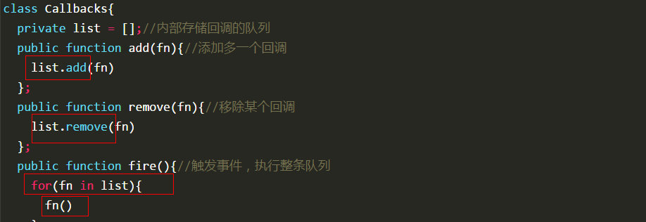
\$.Callbacks(flags)虽然是静态方法，但也是 1 个函数，多个执行不会发生内部冲突。
使用
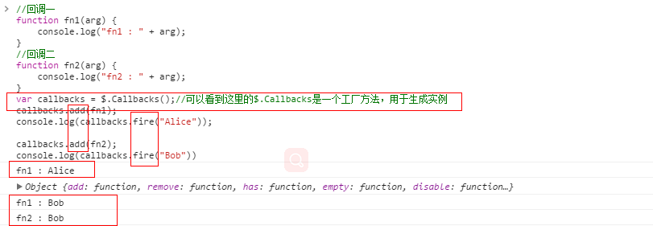
源码
$.Callbacks(flags)接受1个参数options，用于控制触发回调列表行为。可以为：once、memory、unique、stopOnFalse。4个参数可以结合使用，用空格隔开，如$.Callbacks(“once memory unique”)。内部保存到 options 对象中。
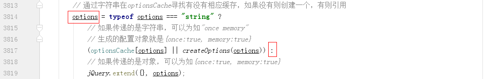
参数 once 表示回调列表只能执行 1 次 fire，然后就将回调列表清空。memory 为在 fire 之后 add 时，新 add 的回调会立即执行，参数为上次 fire 的参数。unique 回调去重。stopOnFalse 为当 1 个回调返回 false 时中断 fire。
基本方法
add
可以接受单个函数或者函数的集合（数组或类数组，也可能是多维，最终都会压扁），内部使用 add 这个有名函数实现（和 add 方法不是同 1 个）。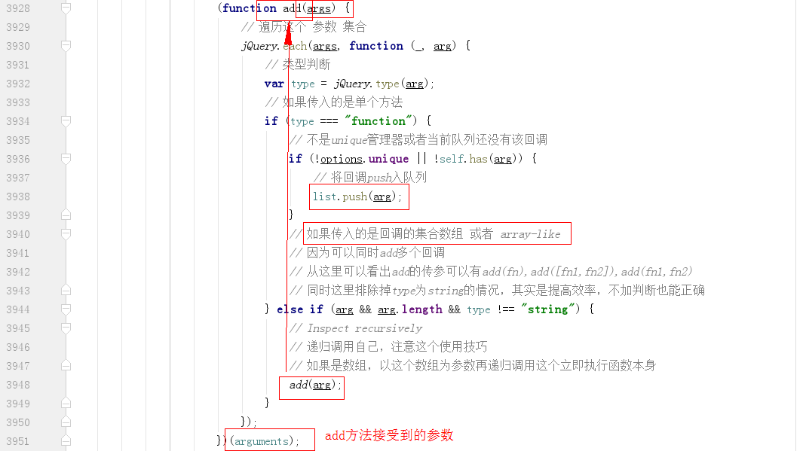
对于 memory 选项，直接添加后触发 fire。
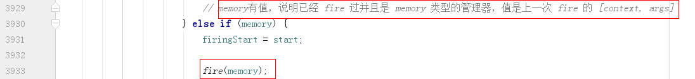
remove
list 中可能有重复的回调，所以里面用 while。arg 只能是 1 个函数（inArray 只能判断单个）。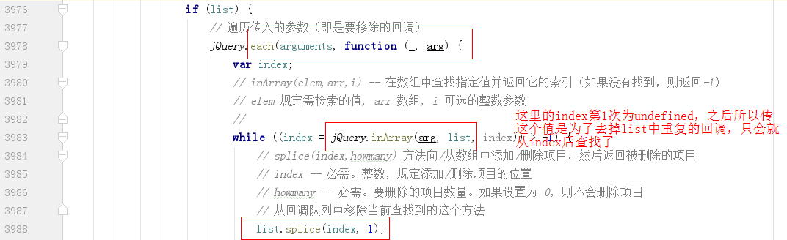
empty
清空回调列表。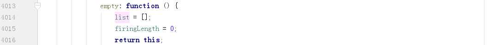
fire
一共涉及 3 个方法，调用关系为：self.fire–>self.fireWith–>fire（注意，每次 fire 都会把 list 中的回调全部触发一遍）。fireWith 方法是以给定的上下文和参数调用所有回调函数，核心功能为：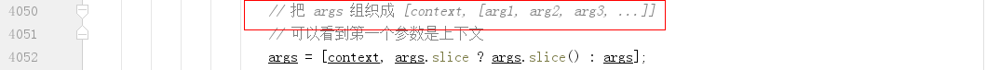
当回调列表正在 fire 时，又有另外的 fire 情况下，且参数不为 once 时，使用 stack 保存的 fire 参数。
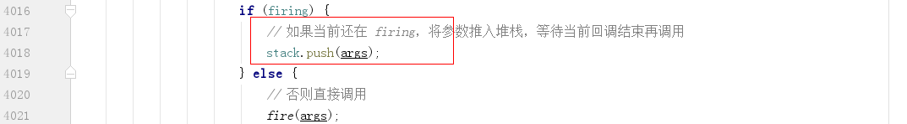
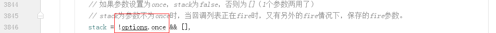
fire 方法就是遍历 list，传入参数在执行上下文调用。
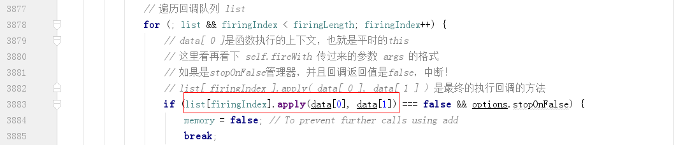
如果 stack 中有参数，需要递归调用以全部触发 list。
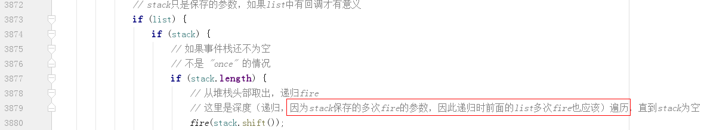
如果为 once+memory，或 memory+lock，虽然不能通过 fire/fireWith 接口触发，但仍然可以通过 add 直接触发，因此需要将 list 清空，避免触发之前的回调。
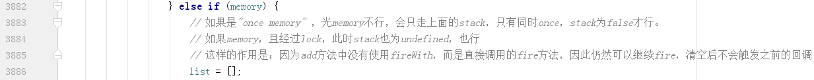
lock
等同于 once，如果有 memory 仍然可以通过 add 方法 fire。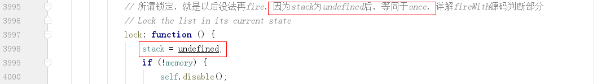
disable
禁用，因为连 memory 都设为 undefined，因此，无法再添加、触发。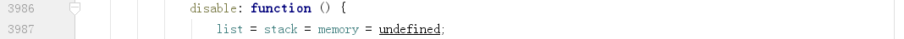
如何实现只触发一次回调队列（option=once）
即，只能执行 1 次 fire，以后将无法执行 fire。
如果 once 为 true，则 stack 将为 false。
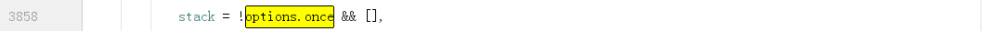
fire 代码中，执行完 list 中的回调之后，将调用 disable 方法。
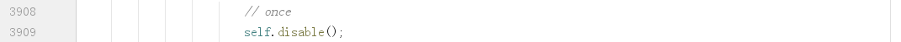
之后再执行 fire，因 list 为 undeined，无法执行，也无法 add/remove 等操作。
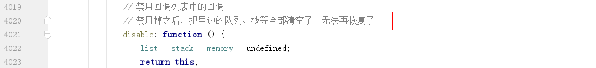
如何实现多次触发（option-once=false）

很简单，即，每次 fire 的时候都执行 1 遍 list 中的回调。
每次 fire，并没有清空 list。

执行 fire 通常不需要 stack，直接执行即可。只要当 firing 时才需要。执行下面这段语句时，只要 list 不为空，以及 stack 隐式转换后不为 false 即可。注意，空数组转为 true，这里的 stack 没有特别意义。


如何立即执行（memory）
add 中，有：
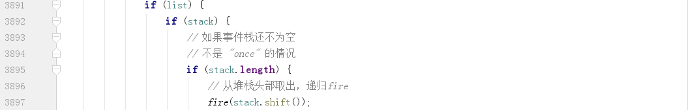
即，在 add 中调用 fire 执行。
而在 fire 中，memory 记录了上次执行的环境和参数。
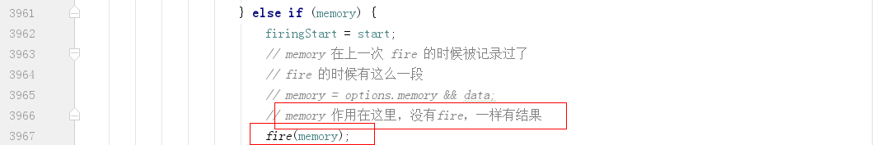
如何并发执行
即，可以在执行的过程中 add/remove 等（比如其中某个回调是异步操作），需要考虑的是本质上仍然是某个时刻只在执行 1 个代码。
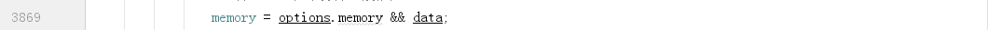
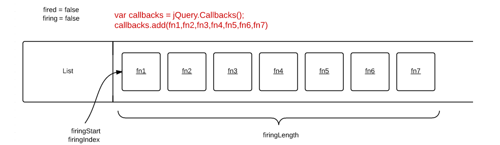
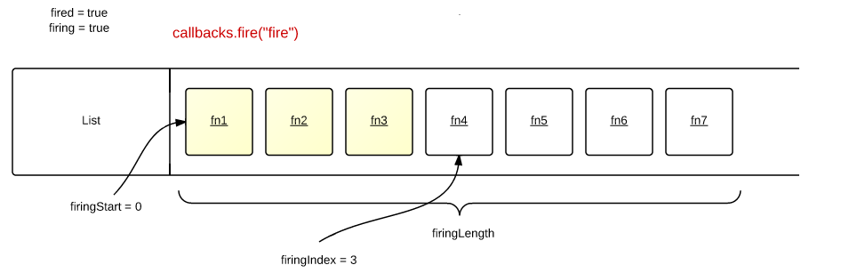
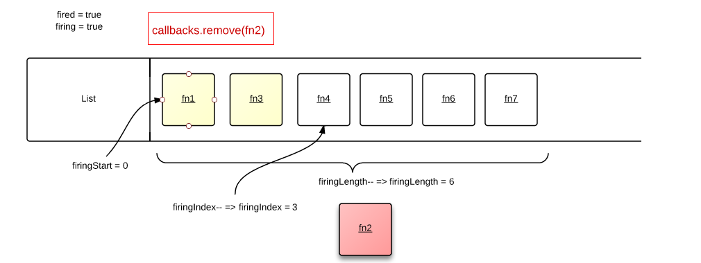
add 的时候，当处于 firing 时，重新获取 list 的长度。
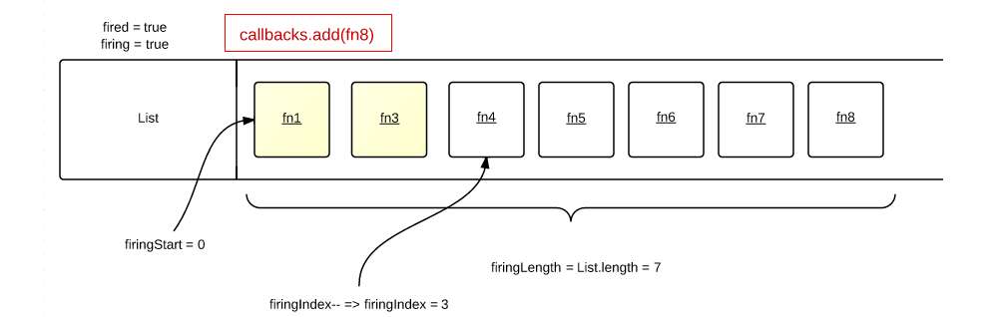
remove 的时候，当处于 firing 时，考虑 index，是否减去总长度和只在执行的 index 值。
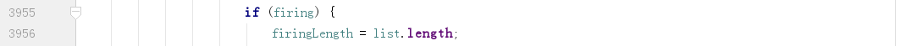